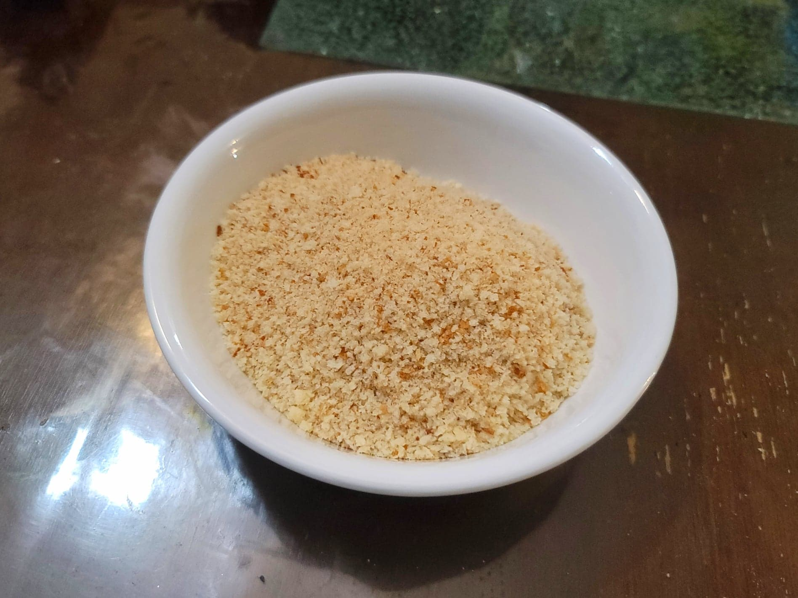

Breadcrumbs

Ingredients:
Instructions:
- Preheat an oven to 300 degrees Fahrenheit.
- Place the slices of bread onto a parchment paper lined baking sheet. Let bake for about 10 minutes per side or until just completely dry. Do not over toast.
- Place the bread into a food processor and pulse to your desired consistency. Alternatively, pulse the bread before placing into the oven to have more control over how toasted the breadcrumbs are.
- Store in an airtight container or use immediately.